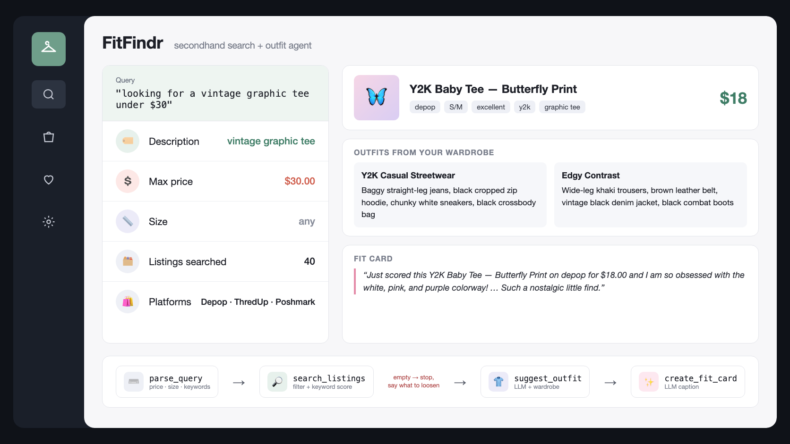

FitFindr: A Tool-Using Agent for Thrift Shopping
Secondhand listings are scattered across sites, and a good find still leaves you wondering what to wear it with. FitFindr takes a plain-English request, finds the best-matching listing within your price and size, styles it with clothes you already own, and stops early with a clear fix when nothing matches.

Project Overview
If search_listings returns an empty list, write a message to session["error"] and return. Otherwise take the first result and move on to suggest_outfit.
“designer ballgown size XXS under $5” ends after the search with 0 model calls and a message to raise the price above $5.00, drop the XXS size, or use broader keywords.
What I Built
FitFindr is a Python CLI agent built for CodePath AI 201 that turns a plain-English request into a secondhand find and an outfit. parse_query splits the request into a description, a size and a max price using plain string splitting. search_listings filters 40 listings from Depop, ThredUp and Poshmark by price and whole-token size, then ranks the rest by how many words they share with the description. suggest_outfit asks Gemini, through the Google Gen AI SDK, for one or two outfits that pair the find with pieces already in the user’s wardrobe, and create_fit_card writes a short post-style caption at temperature 0.9. run_agent connects the steps, stores each run in one session dict, and counts its steps against a cap.
Design Decisions
Each tool returns a clear signal and the loop writes the message: the search returns [] when nothing matches, so if not results ends the run before any model call and the user gets a message naming the filters they set. Every tool reads its inputs from the shared session instead of the previous call’s return value, which lets me print and check any step of a run. I also wrote a contract for each tool and five acceptance criteria with numeric targets before writing code, so the evaluation measures against a bar set ahead of time.
The Result
A request like “vintage graphic tee under $30” returns a Y2K Baby Tee for $18 on Depop, two outfits built from the user’s wardrobe, and a fit card caption. An impossible request like “designer ballgown size XXS under $5” stops after the search with 0 model calls and tells the user to raise the price, drop the size, or broaden the keywords.
Key Features
Readable query parsing that pulls out price, size and description; filtered keyword search with whole-token size matching, so “M” matches “S/M” but not “XL”; a loop that stops early on an empty search with a fix the user can act on; outfit suggestions from the user’s own closet, with general styling advice when the wardrobe is empty; fit card captions that mention the item, price and platform once each; and acceptance criteria and tool contracts written before any results existed.